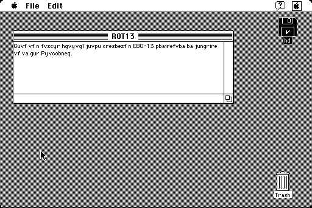

Download
macrot13.zip (4K) MacROT13 repackaged into a zipped hfs disk image and checksum file. The disk image can be mounted with Mini vMac.
macrot13.sit (8K) MacROT13 in the original format.
copyright: John Stiles
mod date: Mar 23, 1994
license: shareware
last known url
(gone)
Performs "a ROT-13 conversion on whatever is in the Clipboard". ROT13 is a very simple way to encrypt text, described by Bruce Horrocks as "the Usenet equivalent of a magazine printing the answer to a quiz upside down".
If you select "Copy" from the Edit menu, then the converted text replaces the contents of the Clipboard. (This isn't mentioned in the About dialog.)

If you find these downloads useful, please consider helping the Gryphel Project, which hosts them.
Here are the md5 checksums for the downloads, signed with Gryphel Key 5:
--------- GRY SIGNED TEXT --------- 8ce1afc9da73b9c30361aeca0e701fdc macrot13.zip 372bc243de90dc928449edf3a8e64199 macrot13.sit ------- BEGIN GRY SIGNATURE ------- Gry/4Xa8CFcUzxdN/LTkc8J14VVPWwS0EDRevY5rTYJAfUirFMj69RjGVulmBZOG Lb8TIVudF1zxEWU0CEgTKHpqCniKZmU9+/g+lWeuLKsJyaBUPmV59ut056dMaOZv vOLO8ZjFeaaThmnG7co7HZOavKr07HJ0wQOxi7+hAckamcflV5wX9Cl4bX89Ga3/ -------- END GRY SIGNATURE --------